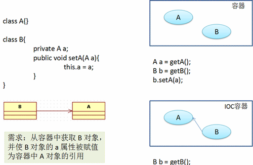

IOC和DI
IOC(Inversion of Control)：其思想是反转资源获取的方向. 传统的资源查找方式要求组件向容器发起请求查找资源. 作为回应, 容器适时的返回资源. 而应用了 IOC 之后, 则是容器主动地将资源推送给它所管理的组件, 组件所要做的仅是选择一种合适的方式来接受资源. 这种行为也被称为查找的被动形式
DI(Dependency Injection：依赖注入) — IOC 的另一种表述方式：即组件以一些预先定义好的方式(例如: setter 方法)接受来自如容器的资源注入. 相对于 IOC 而言，这种表述更直接

在 Spring 的 IOC 容器里配置 Bean
1.在 xml 文件中通过 bean 节点来配置 bean(参照Spring4.0学习1中applicationContext.xml的配置)
1 2 3 4 5 6 7 8 9 10 11
| <!-- 通过全类名的方式配置bean class: bean的全类名。通过反射的方式在IOC容器中创建Bean，所以要求Bean中必须有无参数的构造器。 id: 标识容器中的bean。id唯一。 若 id 没有指定，Spring 自动将权限定性类名作为 Bean 的名字 id 可以指定多个名字，名字之间可用逗号、分号、或空格分隔 --> <bean id="hello" class="com.lizz.Hello"> <!-- 注意这里的name对应的是Hello.java类里面定义的name属性名，Spring是该属性的初始化值 --> <property name="name" value="Spring"></property> </bean>
|
全类名？
例如Hello.java类，鼠标移到public class Hello的Hello上，会自动显示出该类的具体路径，该路径就是全类名。
2.Spring 容器
- 在 Spring IOC 容器读取 Bean 配置创建 Bean 实例之前, 必须对它进行实例化. 只有在容器实例化后, 才可以从 IOC 容器里获取 Bean 实例并使用.
- Spring 提供了两种类型的 IOC 容器实现.
- BeanFactory: IOC 容器的基本实现.
- ApplicationContext: 提供了更多的高级特性. 是 BeanFactory 的子接口.
- BeanFactory 是 Spring 框架的基础设施，面向 Spring 本身；ApplicationContext 面向使用 Spring 框架的开发者，几乎所有的应用场合都直接使用 ApplicationContext 而非底层的 BeanFactory
- 无论使用何种方式, 配置文件时相同的.
3.ApplicationContext
ApplicationContext 的主要实现类：
- ClassPathXmlApplicationContext：从 类路径 下加载配置文件
- FileSystemXmlApplicationContext: 从文件系统中加载配置文件
- ConfigurableApplicationContext 扩展于 ApplicationContext，新增加两个主要方法：refresh() 和 close()， 让 ApplicationContext 具有启动、刷新和关闭上下文的能力
- ApplicationContext 在初始化上下文时就实例化所有单例的 Bean。
- WebApplicationContext 是专门为 WEB 应用而准备的，它允许从相对于 WEB 根目录的路径中完成初始化工作
4.从 IOC 容器中获取 Bean
调用 ApplicationContext 的 getBean() 方法
5.依赖注入的方式
Spring 支持 3 种依赖注入的方式
- 属性注入
- 构造器注入
- 工厂方法注入（很少使用，不推荐）
属性注入
属性注入即通过 setter 方法注入Bean 的属性值或依赖的对象
属性注入使用 <property> 元素, 使用 name 属性指定 Bean 的属性名称，value 属性或 <value> 子节点指定属性值
属性注入是实际应用中最常用的注入方式
例：
1 2 3
| <bean id="hello" class="com.lizz.Hello"> <property name="name" value="Spring"></property> </bean>
|
构造方法注入
通过构造方法注入Bean 的属性值或依赖的对象，它保证了 Bean 实例在实例化后就可以使用。
构造器注入在 <constructor-arg> 元素里声明属性, <constructor-arg> 中没有 name 属性
applicationContext.xml:
1 2 3 4 5 6 7 8 9 10 11
| <!-- 构造方法注入 --> <bean id="car" class="com.lizz.Car"> <constructor-arg value="Audi" index="0"></constructor-arg> <constructor-arg value="Shanghai" index="1"></constructor-arg> <constructor-arg value="30000" type="int"></constructor-arg> </bean> <bean id="car2" class="com.lizz.Car"> <constructor-arg value="Baoma" type="java.lang.String"></constructor-arg> <constructor-arg value="Shanghai" type="java.lang.String"></constructor-arg> <constructor-arg value="30000" type="double"></constructor-arg> </bean>
|
Car.java:
1 2 3 4 5 6 7 8 9 10 11 12 13 14 15 16 17 18 19 20 21 22 23 24
| package com.lizz; public class Car { private String brand; private String address; private double price; private int speed; public Car(String brand, String address, int speed) { super(); this.brand = brand; this.address = address; this.speed = speed; } public Car(String brand, String address, double price) { super(); this.brand = brand; this.address = address; this.speed = speed; } @Override public String toString() { return "Car [brand=" + brand + ", address=" + address +", speed=" + speed + ", price=" + price + "]"; } }
|
Main.java:
1 2 3 4
| Car car = (Car) ctx.getBean("car"); System.out.println(car); car = (Car) ctx.getBean("car2"); System.out.println(car);
|
引用其它bean和内部bean
内部bean不能被外部引用，只能内部使用
代码：
applicationContext.xml增加的代码：
1 2 3 4 5 6 7 8 9 10 11 12 13 14 15 16 17 18 19 20
| <bean id="person" class="com.lizz.Person"> <property name="name" value="Lizz"></property> <property name="age" value="25"></property> <!-- 引用其它bean,使用ref属性建立bean之间的引用关系 --> <!-- <property name="car" ref="car2"></property> --> <!-- 第二种写法 --> <!-- <property name="car"> <ref bean="car2"/> </property> --> <!-- 内部bean写法 --> <!-- <property name="car"> <bean class="com.lizz.Car"> <constructor-arg value="Maserati"></constructor-arg> <constructor-arg value="Shanghai"></constructor-arg> <constructor-arg value="3000000" type="double"></constructor-arg> </bean> </property> --> </bean>
|
Person.java:
1 2 3 4 5 6 7 8 9 10 11 12 13 14 15 16 17 18 19 20 21 22 23 24 25 26 27 28
| package com.lizz; public class Person { private String name; private int age; private Car car; public String getName() { return name; } public void setName(String name) { this.name = name; } public int getAge() { return age; } public void setAge(int age) { this.age = age; } public Car getCar() { return car; } public void setCar(Car car) { this.car = car; } @Override public String toString() { return "Person [name=" + name + ", age=" + age + ", car=" + car + "]"; } }
|
Main.java增加的代码：
1 2
| Person person = (Person) ctx.getBean("person"); System.out.println(person);
|
注入参数null值<null/>
1 2 3 4 5 6 7
| <property name="car"> <bean class="com.lizz.Car"> <constructor-arg value="Maserati"></constructor-arg> <constructor-arg value="Shanghai"></constructor-arg> <constructor-arg><null/></constructor-arg> </bean> </property>
|
级联属性
applicationContext.xml:
1 2 3 4 5 6 7
| <bean id="person2" class="com.lizz.Person"> <constructor-arg value="Lizz"></constructor-arg> <constructor-arg value="25"></constructor-arg> <constructor-arg ref="car"></constructor-arg> <!-- 级联属性 注意：属性需先初始化才能为级联属性赋值，否则会有异常。和Struts2不同--> <property name="car.price" value="1800000"></property> </bean>
|
Main.java:
1 2
| Person person = (Person) ctx.getBean("person2"); // 将person改为person2 System.out.println(person);
|
Person.java：
1 2 3 4 5 6 7
| // 增加了构造器 public Person(String name, int age, Car car) { super(); this.name = name; this.age = age; this.car = car; }
|
这边也踩坑了，之前没加构造器，视频里快捷键一按都没出现就运行OK了，而我则傻兮兮的一个个的对，都没找到问题，后来索性将报错信息百度，遂得到了解决方法。
百度得到了解决方法，也要去理解。applicationContext.xml中新建了<bean>,对应的是Person.java类，这时需要去看看Person.java类内部定义的变量类型，<constructor-arg value="Lizz"></constructor-arg><constructor-arg value="25"></constructor-arg>分别对应了Person.java的name与age属性，这没错，那么问题就出在<constructor-arg ref="car"></constructor-arg>这里，引用的carbean,参数类型也是对的，那么为什么报错呢？
因为一开始，就没有写构造函数。
网上摘抄的回答：在Java中，如果你自己写了一个构造器，那么Java机制将不会提供给你一个默认的构造器，除非你的类中无任何构造器时它才会提供默认的，但是Spring注入时，不管你是否添加属性的注入，它都要去寻找默认构造器，为的是一旦你不注入属性了，也能找到默认构造器，所以，规范的Java写法是：如果你自己写了构造器，那就把默认的也写出来。
PS:这里可以采用无参构造函数+setter方法注入值或者采用我列出来的有参构造函数注入值